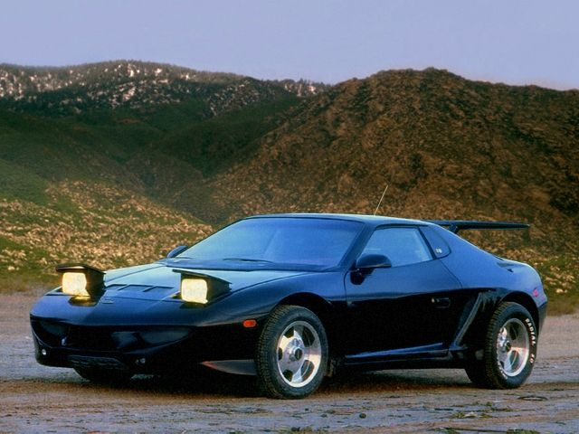

Мотор: Алюминиевый 4,6-литровый V8 серии Northstar
Кит-кар на основе Понтиак Фиеро
Смотреть без смс и регистрацииПроект Лаура 3 начался в 1994 году, когда Александр Кулыгин и Дмитрий Парфенов приняли решение разработать кит-кар на базе Понтиак Фиеро. Благодаря своей конструкции с навесными пластиковыми панелями над стальным несущим кузовом, Понтиак Фиеро оказался идеальным для различных проектов. Для создания автомобиля будущего Парфенов отправился в США, где провел серию эскизно-макетных работ и начал создавать макеты на основе реального автомобиля для будущего производства. Дизайн экстерьера Лауры 3 был разработан дизайнерами Сунтеевым и Куликовым, а салон был создан А. Кулыгиным. Он собрал всю необходимую оснастку из примерно 50 деталей, придавая ей стиль и дух американских образцов того времени. В 1995 году был выпущен первый черный автомобиль Лаура 3 в Санкт-Петербурге, что произвело большое впечатление. Оригинальный дизайн, стильный салон и мощный V6 двигатель заставили всех обратить на него внимание. Проект в России был прекращен. После переезда в США Александр Кулыгин активно участвовал в выставках и мероприятиях, искал потенциальных клиентов и инвесторов для производства комплектов оснастки. Однако несмотря на уникальный кузов и салон, не удалось привлечь инвесторов или клиентов. Видимо, что-то не хватало американской публике для полного восприятия этого автомобиля. Тогда Кулыгин решил внести конструктивные улучшения в автомобиль, чтобы объединить в нем все самое популярное в автомобильном тюнинге того времени. Автомобиль был создан и собран согласно всем правилам тюнинга, когда каждая деталь прорабатывалась до мельчайших деталей. В машину была установлена пневмоподвеска, продвинутая аудиосистема, неоновая подсветка, карбоновое крыло, внушительные диски и другие элементы тюнинга. Спорткар Лаура 3 SxS был построен по типу KIT-CAR, когда на шасси серийного автомобиля устанавливается разнообразие двигателей, улучшенные элементы подвески, управления и необычный кузов. Проект Лаура 3 начался в 1994 году, когда Дмитрий Парфенов и Александр Кулыгин решили создать кит-кар на базе Понтиак Фиеро. Благодаря конструкции с навесными пластиковыми панелями над стальным несущим кузовом, Понтиак Фиеро идеально подходил для таких проектов. Для создания будущей машины Парфенов, вместе с коллегами отправились в США, где провели ряд работ по созданию макетов на основе реальной машины. Дизайн внешнего вида Лауры 3 разработали дизайнеры Сунтеев и Куликов, а салон был спроектирован А. Кулыгиным в стиле американского дизайна того времени. Спустя некоторое время черновые матрицы были готовы. Следующим шагом Парфенов приобрел 5 Фиеро и отправил все это на родину. В Питере кузов доводился, изготавливался пробный комплект деталей, который устанавливался на машину. Проект Лаура 3 начался в 1994 году, когда Александр Кулыгин и Дмитрий Парфенов приняли решение разработать кит-кар на базе Понтиак Фиеро. Благодаря своей конструкции с навесными пластиковыми панелями над стальным несущим кузовом, Понтиак Фиеро оказался идеальным для различных проектов. Для создания автомобиля будущего Парфенов отправился в США, где провел серию эскизно-макетных работ и начал создавать макеты на основе реального автомобиля для будущего производства. Дизайн экстерьера Лауры 3 был разработан дизайнерами Сунтеевым и Куликовым, а салон был создан А. Кулыгиным. Он собрал всю необходимую оснастку из примерно 50 деталей, придавая ей стиль и дух американских образцов того времени. В 1995 году был выпущен первый черный автомобиль Лаура 3 в Санкт-Петербурге, что произвело большое впечатление. Оригинальный дизайн, стильный салон и мощный V6 двигатель заставили всех обратить на него внимание. Проект в России был прекращен. После переезда в США Александр Кулыгин активно участвовал в выставках и мероприятиях, искал потенциальных клиентов и инвесторов для производства комплектов оснастки. Однако несмотря на уникальный кузов и салон, не удалось привлечь инвесторов или клиентов. Видимо, что-то не хватало американской публике для полного восприятия этого автомобиля. Тогда Кулыгин решил внести конструктивные улучшения в автомобиль, чтобы объединить в нем все самое популярное в автомобильном тюнинге того времени. Автомобиль был создан и собран согласно всем правилам тюнинга, когда каждая деталь прорабатывалась до мельчайших деталей. В машину была установлена пневмоподвеска, продвинутая аудиосистема, неоновая подсветка, карбоновое крыло, внушительные диски и другие элементы тюнинга. Спорткар Лаура 3 SxS был построен по типу KIT-CAR, когда на шасси серийного автомобиля устанавливается разнообразие двигателей, улучшенные элементы подвески, управления и необычный кузов. Проект Лаура 3 начался в 1994 году, когда Дмитрий Парфенов и Александр Кулыгин решили создать кит-кар на базе Понтиак Фиеро. Благодаря конструкции с навесными пластиковыми панелями над стальным несущим кузовом, Понтиак Фиеро идеально подходил для таких проектов. Для создания будущей машины Парфенов, вместе с коллегами отправились в США, где провели ряд работ по созданию макетов на основе реальной машины. Дизайн внешнего вида Лауры 3 разработали дизайнеры Сунтеев и Куликов, а салон был спроектирован А. Кулыгиным в стиле американского дизайна того времени. Спустя некоторое время черновые матрицы были готовы. Следующим шагом Парфенов приобрел 5 Фиеро и отправил все это на родину. В Питере кузов доводился, изготавливался пробный комплект деталей, который устанавливался на машину. Проект Лаура 3 начался в 1994 году, когда Александр Кулыгин и Дмитрий Парфенов приняли решение разработать кит-кар на базе Понтиак Фиеро. Благодаря своей конструкции с навесными пластиковыми панелями над стальным несущим кузовом, Понтиак Фиеро оказался идеальным для различных проектов. Для создания автомобиля будущего Парфенов отправился в США, где провел серию эскизно-макетных работ и начал создавать макеты на основе реального автомобиля для будущего производства. Дизайн экстерьера Лауры 3 был разработан дизайнерами Сунтеевым и Куликовым, а салон был создан А. Кулыгиным. Он собрал всю необходимую оснастку из примерно 50 деталей, придавая ей стиль и дух американских образцов того времени. В 1995 году был выпущен первый черный автомобиль Лаура 3 в Санкт-Петербурге, что произвело большое впечатление. Оригинальный дизайн, стильный салон и мощный V6 двигатель заставили всех обратить на него внимание. Проект в России был прекращен. После переезда в США Александр Кулыгин активно участвовал в выставках и мероприятиях, искал потенциальных клиентов и инвесторов для производства комплектов оснастки. Однако несмотря на уникальный кузов и салон, не удалось привлечь инвесторов или клиентов. Видимо, что-то не хватало американской публике для полного восприятия этого автомобиля. Тогда Кулыгин решил внести конструктивные улучшения в автомобиль, чтобы объединить в нем все самое популярное в автомобильном тюнинге того времени. Автомобиль был создан и собран согласно всем правилам тюнинга, когда каждая деталь прорабатывалась до мельчайших деталей. В машину была установлена пневмоподвеска, продвинутая аудиосистема, неоновая подсветка, карбоновое крыло, внушительные диски и другие элементы тюнинга. Спорткар Лаура 3 SxS был построен по типу KIT-CAR, когда на шасси серийного автомобиля устанавливается разнообразие двигателей, улучшенные элементы подвески, управления и необычный кузов. Проект Лаура 3 начался в 1994 году, когда Дмитрий Парфенов и Александр Кулыгин решили создать кит-кар на базе Понтиак Фиеро. Благодаря конструкции с навесными пластиковыми панелями над стальным несущим кузовом, Понтиак Фиеро идеально подходил для таких проектов. Для создания будущей машины Парфенов, вместе с коллегами отправились в США, где провели ряд работ по созданию макетов на основе реальной машины. Дизайн внешнего вида Лауры 3 разработали дизайнеры Сунтеев и Куликов, а салон был спроектирован А. Кулыгиным в стиле американского дизайна того времени. Спустя некоторое время черновые матрицы были готовы. Следующим шагом Парфенов приобрел 5 Фиеро и отправил все это на родину. В Питере кузов доводился, изготавливался пробный комплект деталей, который устанавливался на машину.